background-image: url(./assets/cover.png) background-size: cover class: center, middle # Making maps with <span style="font-weight:bold;font-family:sans-serif;">Ultra <p>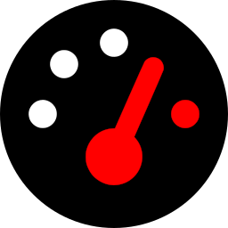</p></span> ### Daniel Schep --- ### Introduction <span style="font-size: .5em">overpass-turbo.eu</span> <span style="font-size: 3em"> + MapCSS</span> <p>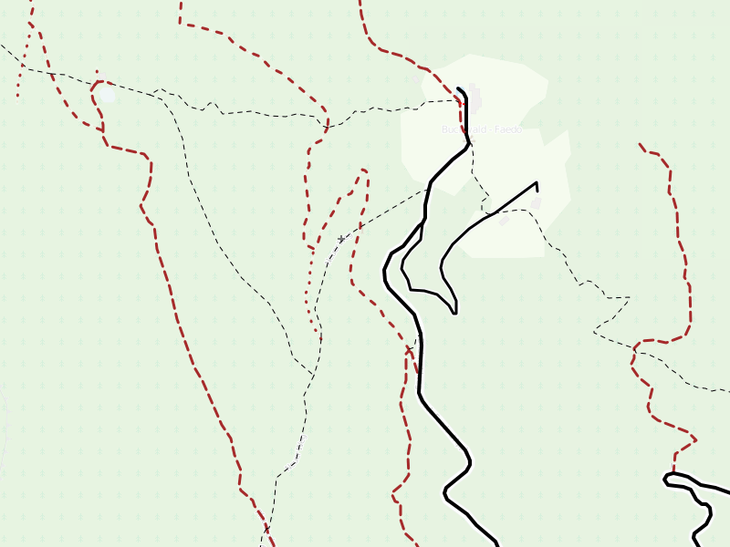</p> <p>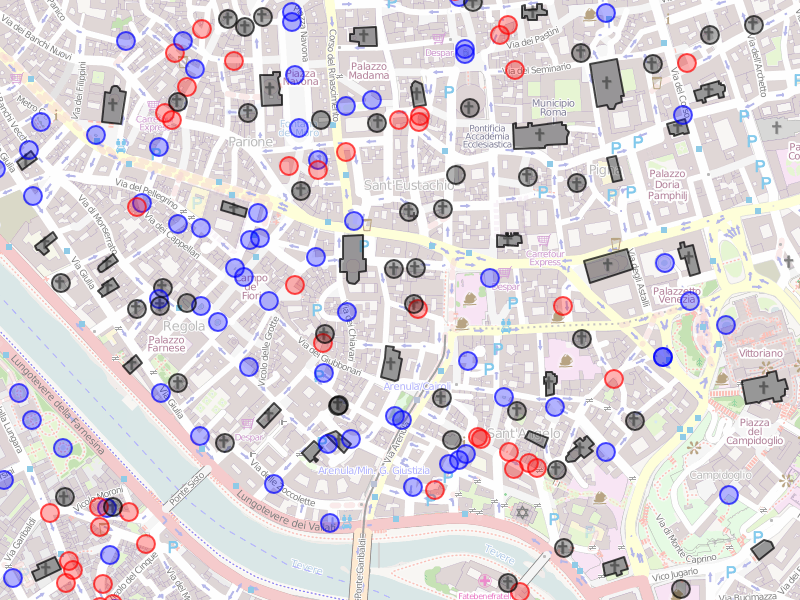</p> --- ### Introduction <span style="font-size: .5em">overpass-ultra.us</span> <p>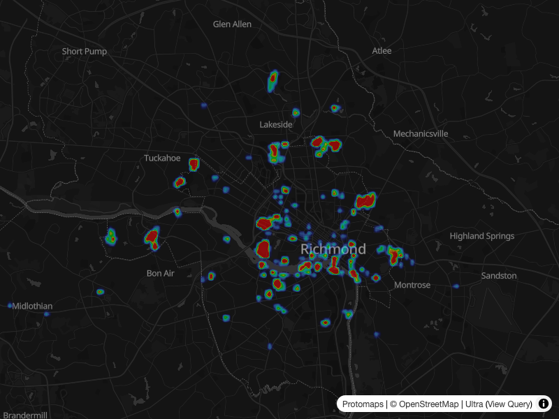</p> <p>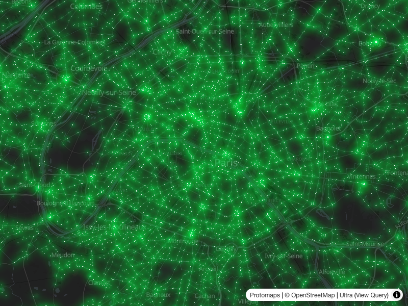</p> --- ### Performance <span style="font-size: .5em">overpass turbo</span> <video width="100%" controls> <source src="./assets/turbo.webm"/> </video> --- ### Performance <span style="font-size: .5em">Ultra</span> <video width="100%" controls> <source src="./assets/ultra.webm"/> </video> --- ### Styling <span style="font-size: .5em">Overpass turbo - MapCSS</span> <p>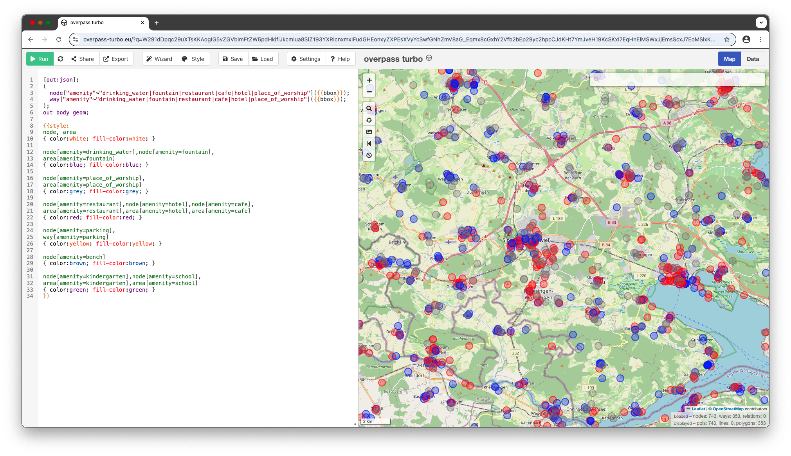</p> --- ### Styling <span style="font-size: .5em">Ultra - MapLibre</span> <p>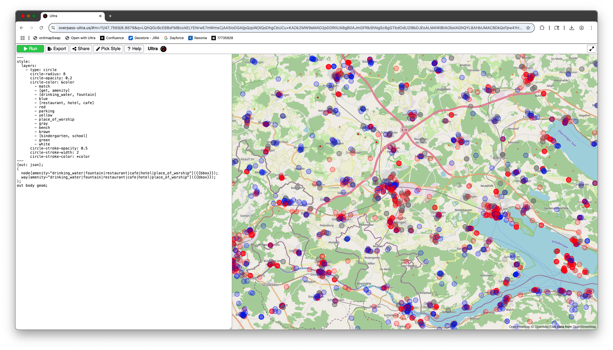</p> --- ### Styling <span style="font-size: .5em"> differences with MapLibre style spec</span> * No need to specify layer `source` when styling query result * No need to specify layer `id` * Extend existing `style.json` ``` style: extends: https://tiles.openfreemap.org/styles/liberty layers: ... ``` * YAML, including support for anchors ``` circle-color: &color red circle-stroke-color: *color ``` * `paint` & `layout` keys at layer root ``` - type: circle paint: circle-color: red ``` vs ``` - type: circle circle-color: red ``` --- ### Styling <span style="font-size: .5em">Vector style benefits</span> * Symbol collision * Sandwich layers <p>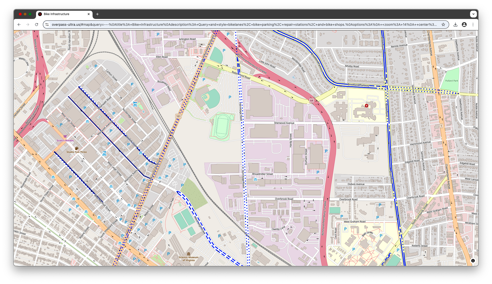</p> --- ### Styling <span style="font-size: .5em">Included Icons</style> <table style="margin:auto;text-align:center;"> <tr> <td height="200" width="200"> <h4>Pinhead</h4> </td> <td height="200" width="200"> <h4>Emoji</h4> </td> </tr> <tr> <td height="200" width="200"> <h4>Maki</h4> </td> <td height="200" width="200"> <h4>Temaki</h4> </td> </tr> </table> --- ### Styling <span style="font-size: .5em">Included Icons - Example</style> <p>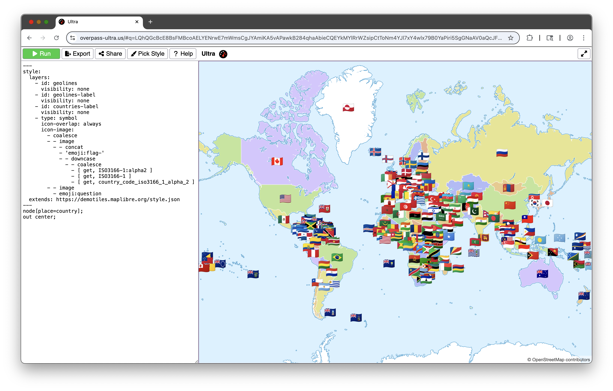</p> --- <div style="float:right"> </div> ### Styling <span style="font-size: .5em">Included Icons - Pinhead JS</style> Example: `icon-image: 'pinhead-js:cargobike?shape=square&shapeFill=#6486f5'` | Option | Description | Default | | :------------- | :--------------------------------------------------------------------------------------------- | :---------------------------------------------------- | | `cornerRadius` | Corner radius (applies to `square` only) | `4` | | `fill` | Sets the fill color of the icon | `black` or `white` (auto-calculated from `shapeFill`) | | `padding` | Internal padding between icon and shape edge | Varies by shape | | `scale` | Scale factor for the output SVG dimensions | `1` | | `shape` | Background shape: `square`, `circle`, `map_pin`, `marker`, a raw SVG string, or a PNG data URI | `none` | | `shapeFill` | Fill color of the background shape | `black` | | `stroke` | Color of the stroke (applies to shape if present, otherwise icon) | Auto-calculated (contrasting or darkened/lightened) | | `strokeWidth` | Width of the stroke | `1` for `marker`, else `0` | | `flip` | Flip the icon: `horizontal` or `vertical` | `none` | | `rotate` | Rotate the icon | `none` | --- ### Styling <span style="font-size: .5em">Included Styles</style> <p>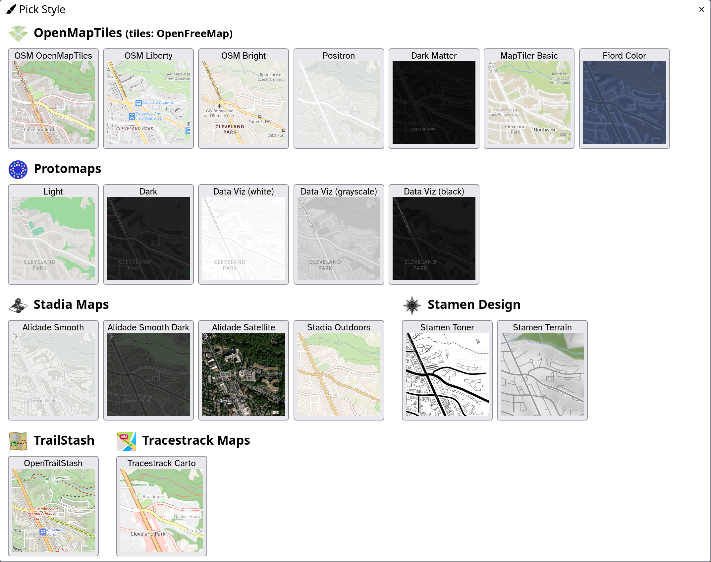</p> --- ### Beyond Overpass <span style="font-size: .5em">query providers</span> <div style="float:right"> <code>+</code> default provider. <br><code>*</code> detected by <code>auto</code> provider. </div> <ul> <li><code>auto+</code></li> <li><code>dsv*</code></li> <li><code>duckdb</code></li> <li><code>esri*</code></li> <li><code>geojson*</code></li> <li><code>gpx*</code></li> <li><code>javascript</code></li> <li><code>kml*</code></li> <li><code>ohsome</code></li> <li><code>osmjson*</code></li> <li><code>osmWebsite*</code></li> <li><code>osmWiki*</code></li> <li><code>osmxml*</code></li> <li><code>overpass*</code></li> <li><code>postpass</code></li> <li><code>qlever</code></li> <li><code>raster*</code></li> <li><code>raw*</code></li> <li><code>sophox</code></li> <li><code>sparql</code></li> <li><code>taginfo*</code></li> <li><code>tcx*</code></li> <li><code>vector*</code></li> </ul> --- ### Beyond Overpass <span style="font-size: .5em">planet-scale queries with QLever</span> <video width="100%" controls> <source src="./assets/qlever.webm"/> </video> --- ### Beyond Overpass <span style="font-size: .5em">DuckDB</span> <p>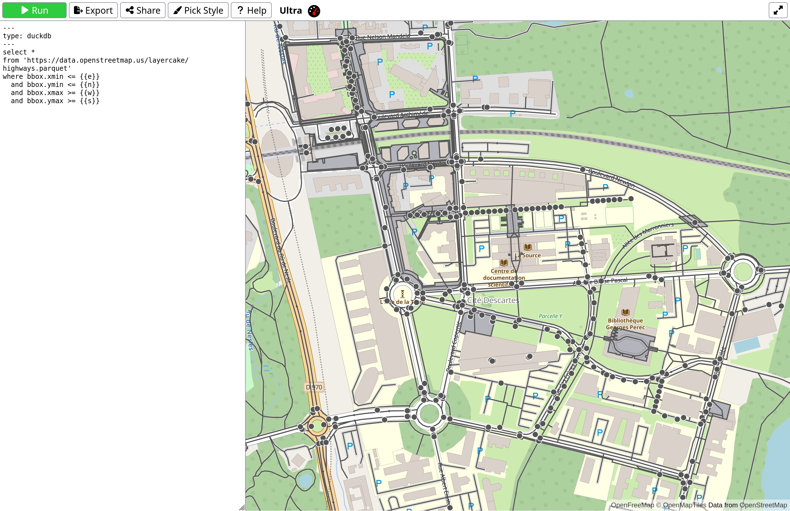</p> --- ### Beyond Overpass <span style="font-size: .5em">Esri MapServer/FeatureServer</span> <p>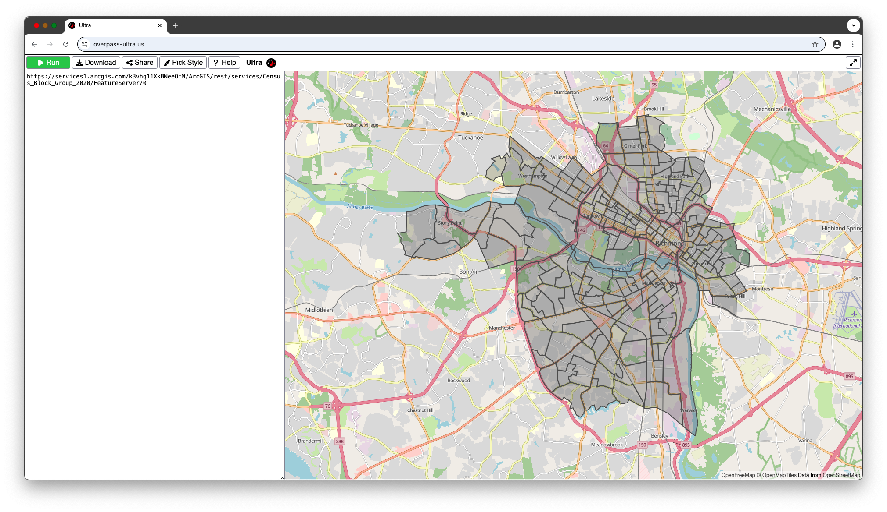</p> --- ### Transforms Use custom javascript and libraries like Turf.js to transform query results. <p>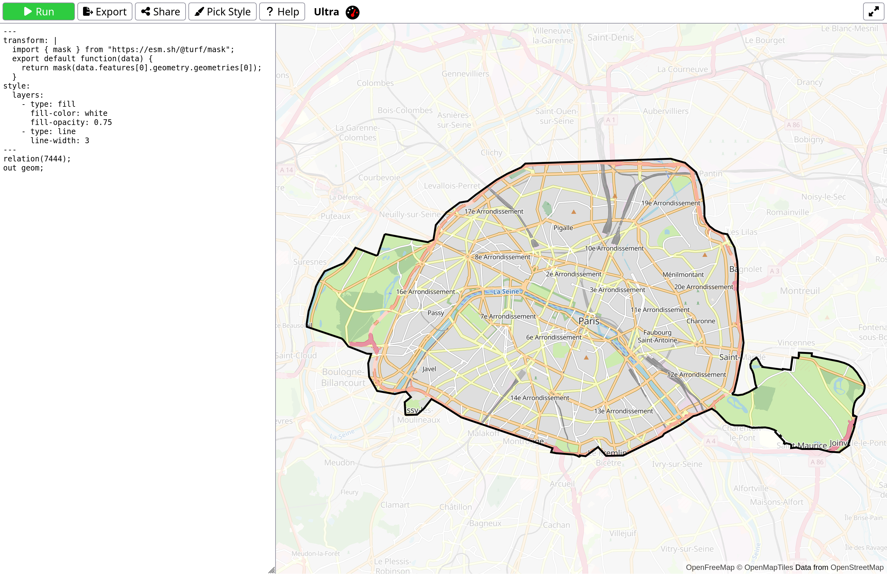</p> --- ### Export to `style.json` Export your map as a MapLibre GL style for use on your own site or app. <p>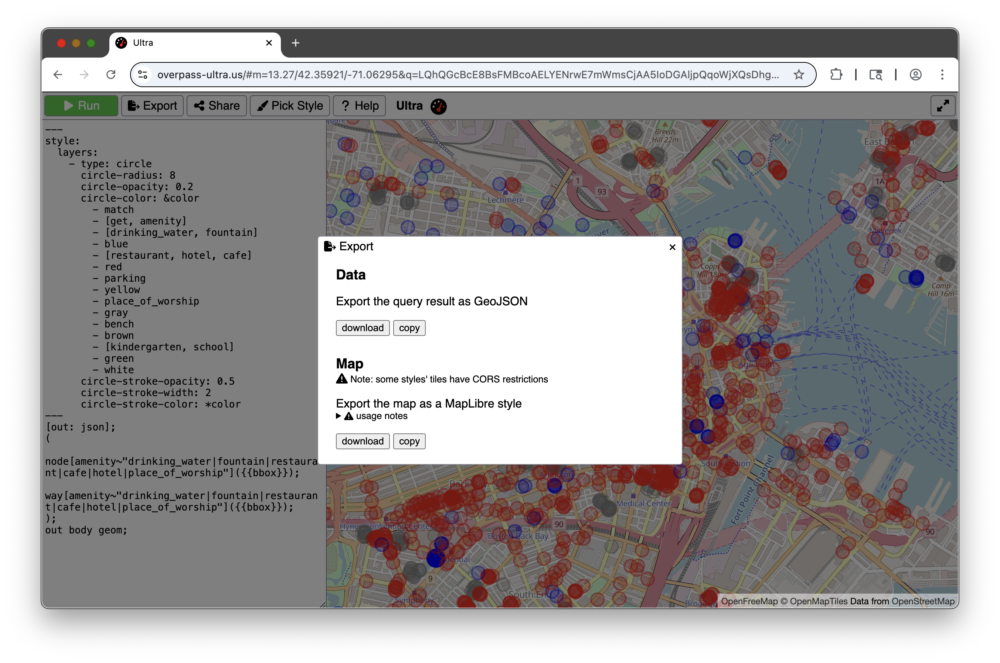</p> --- ### That's all folks! <br><br><br> * Use it: [overpass-ultra.us](https://overpass-ultra.us) * Documentation: [overpass-ultra.us/docs](https://overpass-ultra.us/docs) * These slides: [slides.schep.me/ultra-sotm-2026](https://slides.schep.me/ultra-sotm-2026/) * Source code: [gitlab.com/trailstash/ultra](https://gitlab.com/trailstash/ultra) * Contact me: * <a href="https://osmus.slack.com/team/U04AYHWCY3A"><kbd>@Daniel Schep</kbd></a> on OSM US Slack * <a href="https://mastodon.social/@dschep"><kbd>@dschep@mastodon.social</kbd></a> on Mastodon * <a href="https://bsky.app/profile/trailsta.sh"><kbd>@trailsta.sh</kbd></a> on Bluesky